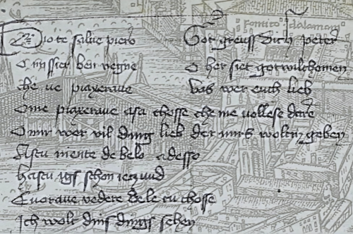

Fremdsprachlehrwerke
Die ältesten überlieferten volkssprachlichen Fremdsprachenlehrwerke stammen aus dem Spätmittelalter. Sie erheben keinen theoretischen Anspruch und sind von Anfang an mehrsprachig konzipiert. Sie sind ferner nicht in erster Linie für den Erwerb einer Sprache als Schriftsprache angelegt, sondern zielen darauf ab, den Nutzern die Grundlagen der mündlichen Konversation in einer Fremdsprache zu vermitteln.

Eines der frühesten Fremdsprachenlehrwerke mit Deutschanteil markiert das venezianisch-bairische Sprachbuch des fränkischen Schulmeisters Georg von Nürnberg (1424). In Venedig unterrichtete Georg im 15. Jahrhundert am Handel orientiertes Deutsch. Für den Unterricht nutzte er einen Leitfaden (der in sechs Manuskripten überliefert ist), der Wortlisten, Flexionsparadigmen und Musterdialoge enthält. 1477 erschien in Venedig eine gekürzte Bearbeitung von Adam von Rottweil, die mehrfach nachgedruckt wurde und als Vorlage für Übertragungen in andere Fremdsprachen diente. Als sog. „vochabolista“ erfuhren diese Bücher eine ebenso große Verbreitung wie die „Colloquia“: Lehrwerke mit parallelisierten Musterdialogen in bis zu zehn Sprachen über alltägliche Themen, die auf den Antwerpener Sprachmeister Noël de Berlaimont zurückgehen.
Das interakademische Vorhaben FSL digital untersucht solche Fremdsprachenlehrwerke aus der europäischen Frühen Neuzeit, in denen das Deutsche als Ziel- oder Ausgangssprache auftritt. Zur zeitlichen Abgrenzung dient die Jahrhundertwende vom 17. zum 18. Jahrhundert. Für das Kernkorpus sind Lehrbücher ausgewählt worden, die mehrere Werkteile vereinen und nicht als reine Wörterbücher oder Grammatiken zu bezeichnen sind, Ausnahme dabei bilden Werke, die sich auf Musterdialoge konzentrieren, weil diese mündlichkeitsnahen und alltagssprachlichen Texte sich für die Erforschung sprachpraktischer Fragestellung besonders zu eignen scheinen. Ein weiterer Fokus liegt auf Mehrsprachigkeit, daher sind Fremdsprachenlehrwerke, die mehr als zwei Sprachen darbieten ebenfalls bevorzugt berücksichtigt.
Zur Einordnung in produktions- und rezeptionshistorische Kontexte sind jedoch darüber hinaus auch Sprachbücher umfassend bibliographisch erfasst worden und zum Teil auch ins erweiterte Korpus eingeflossen, die ins 18. Jahrhundert hineinreichen oder im engeren Sinne der lateinischen Grammatikschreibung zuzuordnen sind. Die Zuordnungen sind entsprechend kenntlich gemacht.